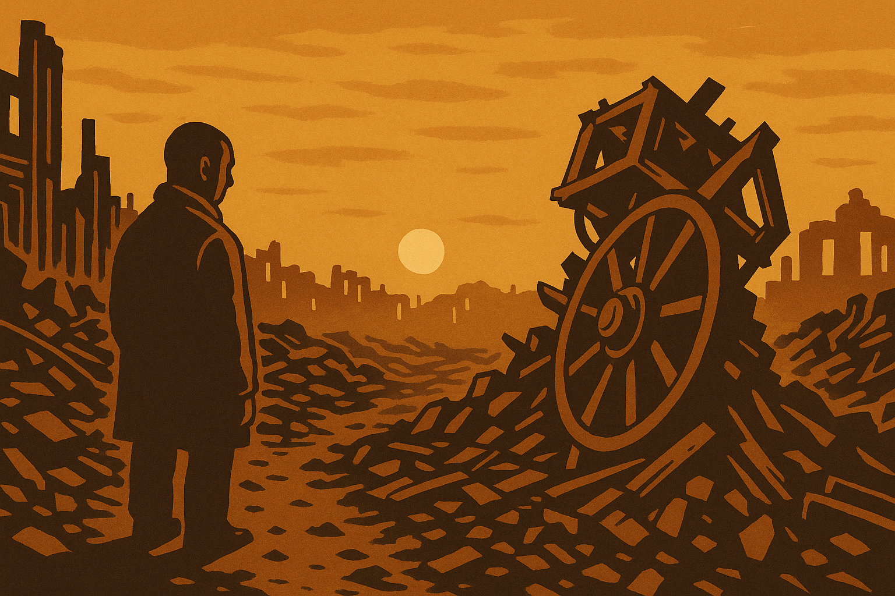
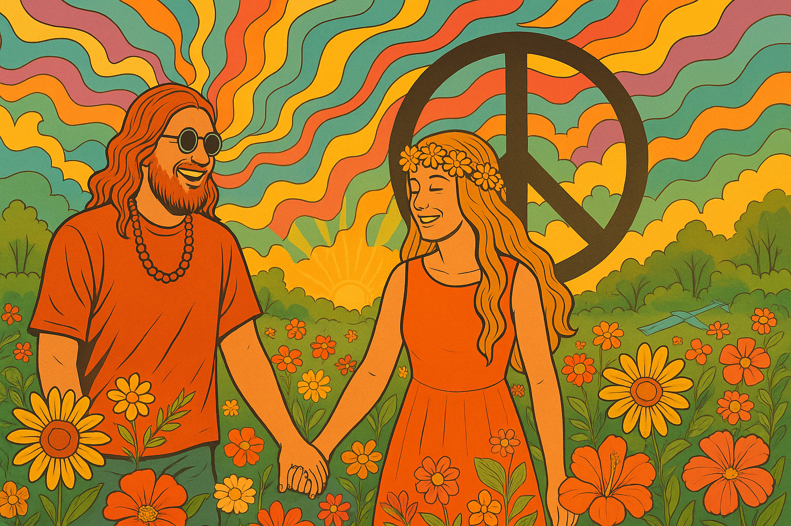
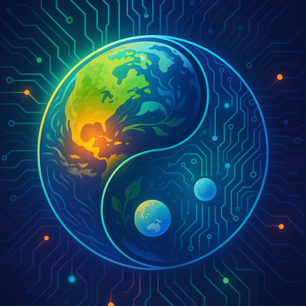
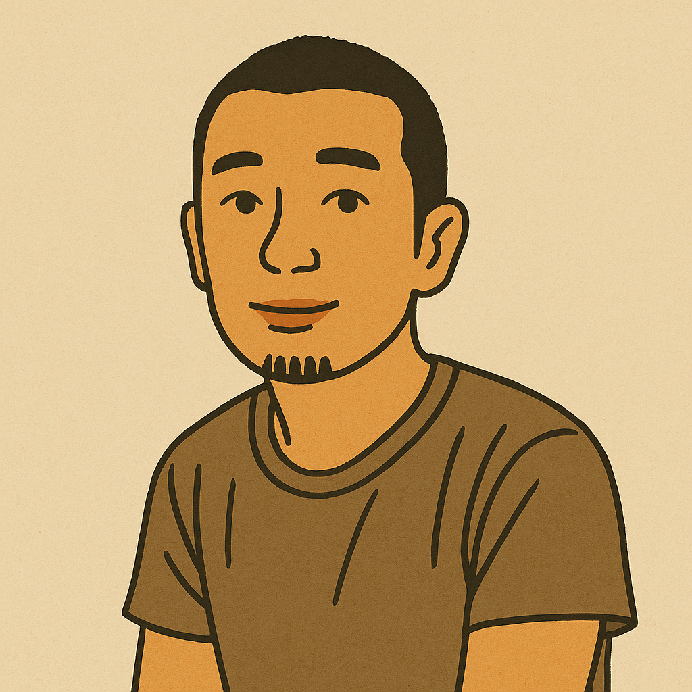
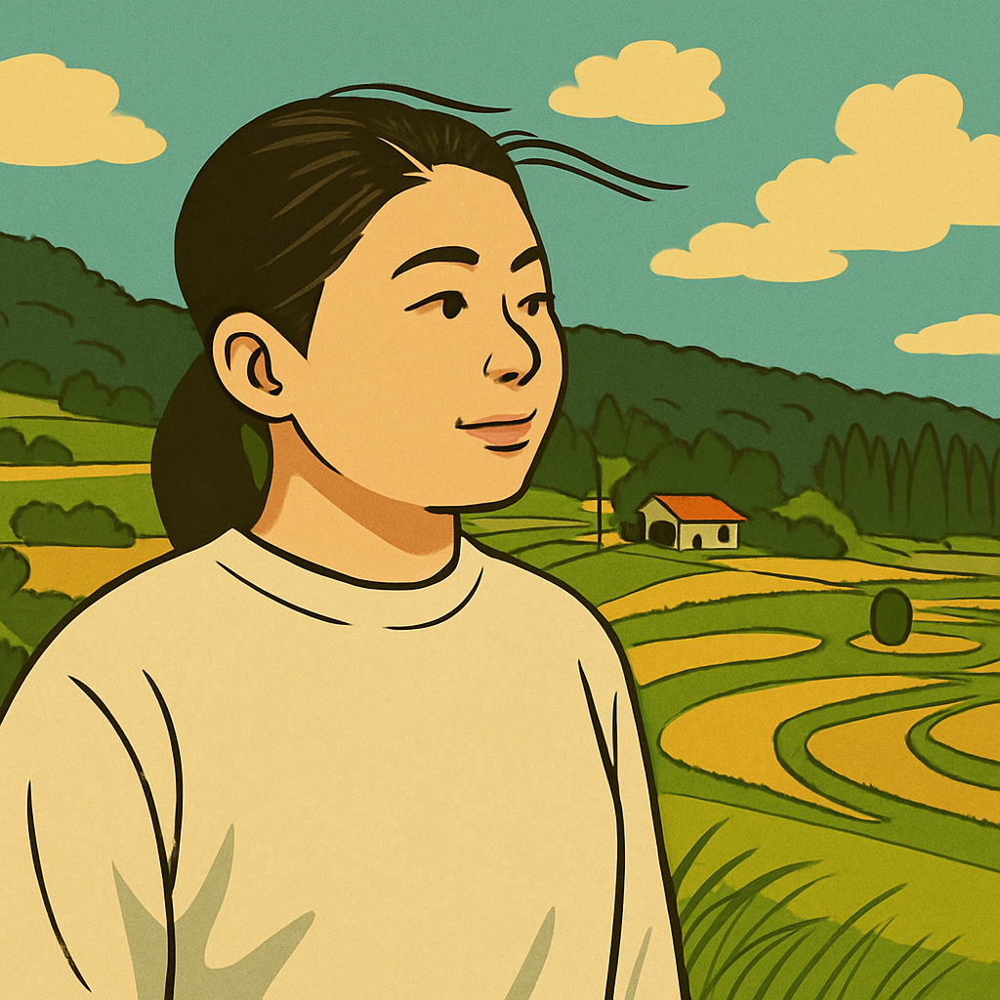
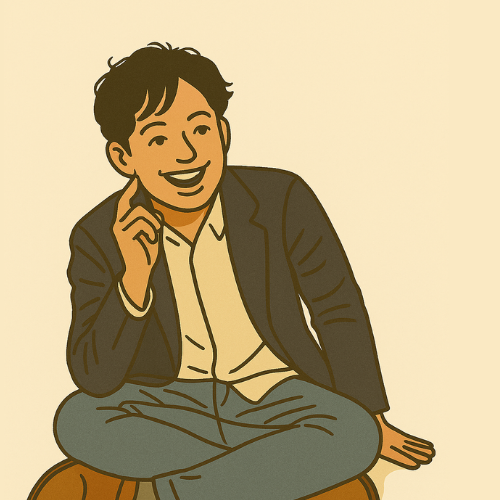
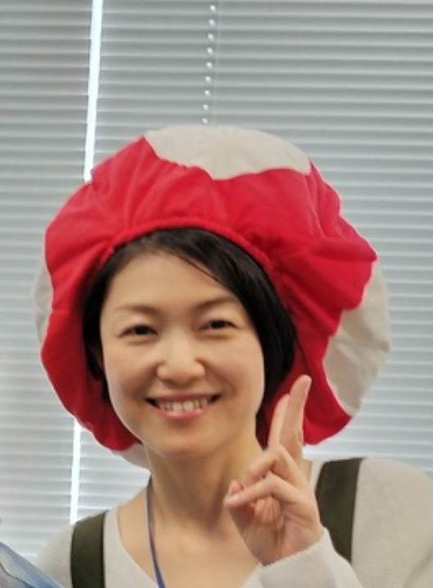

両極を統合し、違いがお互いのギフトになる学び
プラネタリーラーニングとは、他者、自然、AIと出会い、問いを立て、応答することで、自分と社会を編み直す新しい学びのプロセスです。違いを序列化や分断の原因にせず、違いのあいだをゆらいだり、往復したりすると、次元を上げて統合する可能性が開かれてきます。違いを統合への手がかりとすることができると、違いがお互いのギフトになります。このような学び方を身につけることで、惑星規模の共生社会で生きる力を身につけることができます。

第二次世界大戦を経て
人類と技術の関係が問い直される

Love & Peace ムーブメントで
自然との調和を志向
パーソナルコンピュータ誕生
「コンピューターをみんなの手に」
福島の経験が
エネルギーと共生を再考する契機
AIと自立分散型システムが
新たな共創の可能性を拓く
体系的な学びは、すでに確立した知の体系を効率的に学ぶものです。生成的な学びは、新しいものが生まれてくる学びです。プラネタリーラーニングでは、これらを相互補完的なものと捉え、両者を行き来することで、一人ひとりが異なる学びの原理を身体化して統合することを目指します。

拠点を超えて繋がって学ぶプログラムです。週1回90～120分程度です。体系的な学び（陽）と生成的な学び（陰）を交互に行います。
| 週 | 陰陽 | 主体 | 内容 |
|---|---|---|---|
| 第1週 | 陽（構成） | アドバイザー／メンター | 思考法・スキル習得 |
| 第2週 | 陰（生成） | 学習者＋コーディネーター | プロジェクト実践／動かしながら考える／問いの跳躍 |
| 第3週 | 陽（再構成） | アドバイザー／メンター | 意味の整理／共有／対話 |
| 第4週 | 陰（再生成） | 学習者＋コーディネーター | 振り返り・問いの還元・新たな種の発芽 |
思考法やスキルを身につけることで、自分の問いを形にして社会へ届ける力をつける
| 領域 | 主なスキルセット |
|---|---|
| 課題認識・意味づけ | 感知力／構造把握／社会文脈接続力 |
| 代案創出 | 問いの跳躍／創発的思考／アイデア統合力 |
| 具現化・実装 | プロトタイピング／ビジネスモデル設計／マーケティング／プレゼン／交渉力 |
| 共創・合意形成 | 跳躍的対話／コンセンサス形成／ファシリテーション |
| AI協働 | GPT対話設計／AIとの共創学習／即時スキル獲得（MBL） |
"動かしながら考える"中で、問いが跳ね、関係性が生成される
各拠点のコーディネーターによる事例共有や学び合いを隔週で行います。コーディネーター同士のつながりが、学習者の繋がりを生み出す源泉となります。
| 陽（構成） | 陰（生成） |
|---|---|
| 思考法やスキルの習得 | プロジェクトで使いながら問いが深まる |
| 知識のモデル化 | 自分の問いを再構成し直す経験 |
| メンタルモデルのメタ認知 | ゆらぎや偶発からの跳躍 |
インストール型の学びでは、学習者を均一化する必要がありますが、違いを学びの源にするプラネタリーラーニングでは、学習者の多様性が重要になります。
| 属性 | 目的 | 参加形式 | 月額例 |
|---|---|---|---|
| フリースクール | 多様な学びの保障 | コーディネーター2名＋地域窓口 | 2万円〜 |
| 学校 | 探究導入・教師育成 | コーディネーター2名＋教材提供 | 4万円〜 |
| 中小企業 | 社会接続・未来人材育成 | コーディネーター2名参加 | 6万円～ |
| 大企業 | ESG／SDGs戦略 | コーディネーター2名＋発信連携 | 12万円～ |
「誰が正しいか」ではなく、「誰とどう関係し直せるか」
違いが跳ね、問いが生まれ、学びが社会と呼吸する循環へ。
プラネタリーラーニングは、そんな学びのOSをひらきます。
人との関係が変われば、学びが変わる。
自分と世界のつながりを問い直すところから、すべてがはじまる。
あなたも、この循環に参加しませんか？
問い、跳ね、つながり直す。そんな学びの旅に、いま一歩を踏み出してみませんか？

社会変革デジタルファシリテーター。『Zoomオンライン革命！』『出現する参加型社会』など著書多数。全体コンセプトとAI共創ラーニングを担当

デジタルを活用した探究学習を実践する教育コーディネーター。テレプレゼンスシステム「窓」を活用して学びのフィールドを拡張している。

一人ひとりが自分の人生を構築する支援を行う私塾Bidenを主宰。自分史とコーチング、プロジェクトを組み合わせながら、自分のやりたいことを具体化する梅田メソッド開発者。
システム思考とNVCを組み合わせて学習する組織を実現した葵小学校の元リーダー。小学生を対象とした探究学習や生成AIの教育活用のトップランナー

かすみがうら市のコミュニティスペースTAKiBiBAを主宰。一人ひとりの想いが交差し、コミュニティが生成するプロセスをサポートしている。
プラネタリーラーニングの最新情報、イベントの案内、
そして、学びの旅への第一歩となる招待状をお届けします。